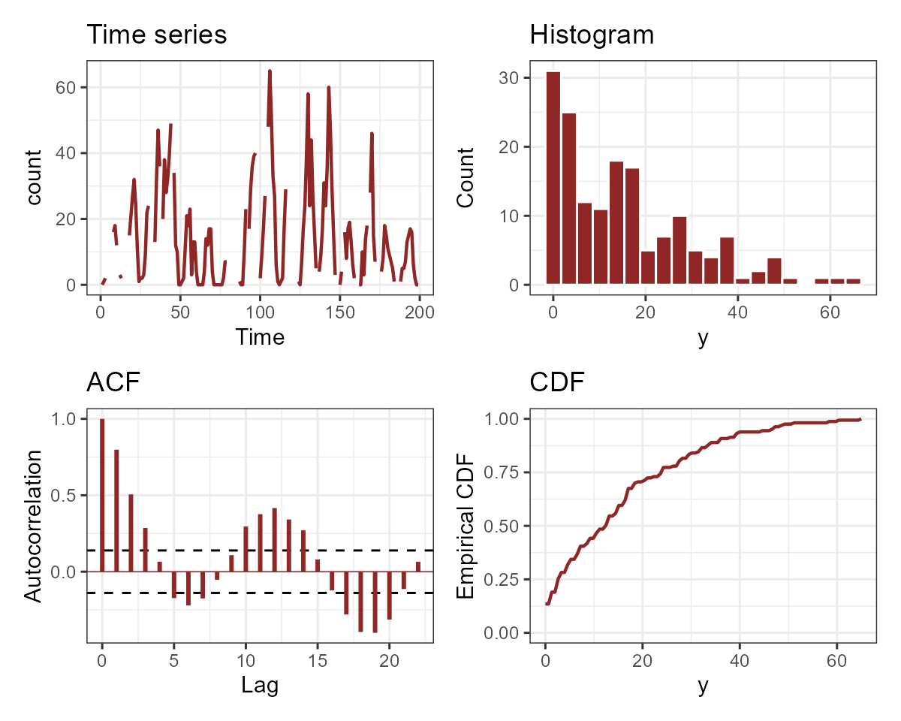
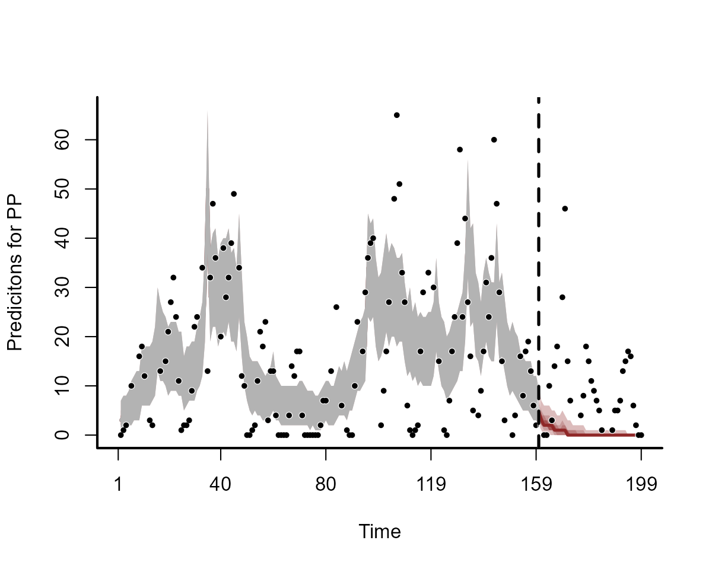
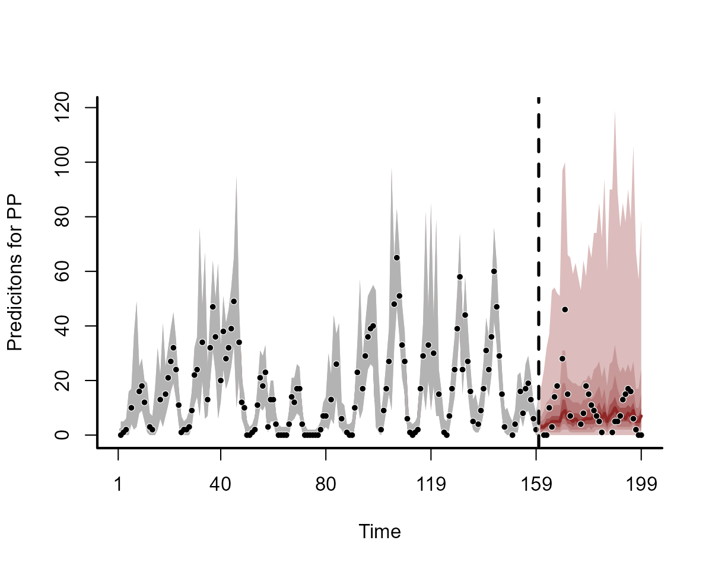

Overview of the mvgam package
Nicholas J Clark
2023-11-01
Source:vignettes/mvgam_overview.Rmd
mvgam_overview.RmdThe purpose of this vignette is to give a general overview of the
mvgam package and its primary functions.
Dynamic GAMs
Briefly, assume \(\tilde{\boldsymbol{y}}_{t}\) is the conditional expectation of a response variable \(\boldsymbol{y}\) at time \(\boldsymbol{t}\). Assuming \(\boldsymbol{y}\) is drawn from an exponential distribution with an invertible link function, the linear predictor for a Dynamic GAM is written as:
\[g(\tilde{\boldsymbol{y}}_{t})=\alpha+\sum\limits_{i=1}^I\boldsymbol{s}_{i,t}\boldsymbol{x}_{i,t}+\boldsymbol{z}_{t}\,,\]
Here \(\alpha\) is the unknown intercept, the \(\boldsymbol{s}\)’s are unknown smooth functions of covariates (\(\boldsymbol{x}\)’s) and \(\boldsymbol{z}\) is a dynamic latent trend. Each smooth function \(\boldsymbol{s}_{i}\) is composed of basis expansions whose coefficients, which must be estimated, control the functional relationship between \(\boldsymbol{x}_{i}\) and \(log(\tilde{\boldsymbol{y}})\). The size of the basis expansion limits the smooth’s potential complexity. A larger set of basis functions allows greater flexibility. Several advantages of GAMs are that they can model a diversity of response families, including discrete distributions (i.e. Poisson, Negative Binomial, Tweedie-Poisson) that accommodate common ecological features such as zero-inflation or overdispersion, and that they can be formulated to include hierarchical smoothing for multivariate responses. For the dynamic component, in its most basic form we assume a random walk with drift:
\[\boldsymbol{z}_{t}=\phi+\boldsymbol{z}_{t-1}+\boldsymbol{e}_{t}\,,\]
where \(\phi\) is an optional drift
parameter (if the latent trend is assumed to not be stationary) and
\(\boldsymbol{e}\) is drawn from a
zero-centred Gaussian distribution. This model is easily modified to
include autoregressive terms, which mvgam accomodates up to
order = 3. There are many other types of models that can be
handled in mvgam, but this overview will just introduce a
few of them.
Example time series data
The ‘portal_data’ object contains time series of rodent captures from the Portal Project, a long-term monitoring study based near the town of Portal, Arizona. Researchers have been operating a standardized set of baited traps within 24 experimental plots at this site since the 1970’s. Sampling follows the lunar monthly cycle, with observations occurring on average about 28 days apart. However, missing observations do occur due to difficulties accessing the site (weather events, COVID disruptions etc..). You can read about the full sampling protocol in this preprint by Ernest et al on the Biorxiv.
data("portal_data")As the data come pre-loaded with the mvgam package, you
can read a little about it in the help page using
?portal_data. Before working with data, it is important to
inspect how the data are structured, first using head:
head(portal_data)## moon DM DO PP OT year month mintemp precipitation ndvi
## 1 329 10 6 0 2 2004 1 -9.710 37.8 1.465889
## 2 330 14 8 1 0 2004 2 -5.924 8.7 1.558507
## 3 331 9 1 2 1 2004 3 -0.220 43.5 1.337817
## 4 332 NA NA NA NA 2004 4 1.931 23.9 1.658913
## 5 333 15 8 10 1 2004 5 6.568 0.9 1.853656
## 6 334 NA NA NA NA 2004 6 11.590 1.4 1.761330But the glimpse function in dplyr is also
useful for understanding how variables are structured
dplyr::glimpse(portal_data)## Rows: 199
## Columns: 10
## $ moon <int> 329, 330, 331, 332, 333, 334, 335, 336, 337, 338, 339, 3…
## $ DM <int> 10, 14, 9, NA, 15, NA, NA, 9, 5, 8, NA, 14, 7, NA, NA, 9…
## $ DO <int> 6, 8, 1, NA, 8, NA, NA, 3, 3, 4, NA, 3, 8, NA, NA, 3, NA…
## $ PP <int> 0, 1, 2, NA, 10, NA, NA, 16, 18, 12, NA, 3, 2, NA, NA, 1…
## $ OT <int> 2, 0, 1, NA, 1, NA, NA, 1, 0, 0, NA, 2, 1, NA, NA, 1, NA…
## $ year <int> 2004, 2004, 2004, 2004, 2004, 2004, 2004, 2004, 2004, 20…
## $ month <int> 1, 2, 3, 4, 5, 6, 7, 8, 9, 10, 11, 12, 1, 2, 3, 4, 5, 6,…
## $ mintemp <dbl> -9.710, -5.924, -0.220, 1.931, 6.568, 11.590, 14.370, 16…
## $ precipitation <dbl> 37.8, 8.7, 43.5, 23.9, 0.9, 1.4, 20.3, 91.0, 60.5, 25.2,…
## $ ndvi <dbl> 1.4658889, 1.5585069, 1.3378172, 1.6589129, 1.8536561, 1…We will focus analyses on the time series of captures for one specific rodent species, the Desert Pocket Mouse Chaetodipus penicillatus. This species is interesting in that it goes into a kind of “hibernation” during the colder months, leading to very low captures during the winter period
Manipulating data for modelling
Manipulating the data into a ‘long’ format is necessary for modelling
in mvgam. By ‘long’ format, we mean that each
series x time observation needs to have its own entry in
the dataframe or list object that we wish to
use as data for modelling. A simple example can be viewed by simulating
data using the sim_mvgam function. See
?sim_mvgam for more details
## y season year series time
## 1 3 1 1 series_1 1
## 2 0 1 1 series_2 1
## 3 2 1 1 series_3 1
## 4 1 1 1 series_4 1
## 5 3 2 1 series_1 2
## 6 1 2 1 series_2 2
## 7 1 2 1 series_3 2
## 8 3 2 1 series_4 2
## 9 0 3 1 series_1 3
## 10 0 3 1 series_2 3
## 11 0 3 1 series_3 3
## 12 0 3 1 series_4 3Notice how we have four different time series in these simulated
data, but we do not spread the outcome values into different columns.
Rather, there is only a single column for the outcome variable, labelled
y in these simulated data. We also must supply a variable
labelled time to ensure the modelling software knows how to
arrange the time series when building models. This setup still allows us
to formulate multivariate time series models, as you can see in the State-Space
vignette. Below are the steps needed to shape our
portal_data object into the correct form. First, we create
a time variable, select the column representing counts of
our target species (PP), and select appropriate variables
that we can use as predictors
portal_data %>%
# mvgam requires a 'time' variable be present in the data to index
# the temporal observations. This is especially important when tracking
# multiple time series. In the Portal data, the 'moon' variable indexes the
# lunar monthly timestep of the trapping sessions
dplyr::mutate(time = moon - (min(moon)) + 1) %>%
# We can also provide a more informative name for the outcome variable, which
# is counts of the 'PP' species (Chaetodipus penicillatus) across all control
# plots
dplyr::mutate(count = PP) %>%
# The other requirement for mvgam is a 'series' variable, which needs to be a
# factor variable to index which time series each row in the data belongs to.
# Again, this is more useful when you have multiple time series in the data
dplyr::mutate(series = as.factor('PP')) %>%
# Select the variables of interest to keep in the model_data
dplyr::select(series, year, time, count, mintemp, ndvi) -> model_dataThe data now contain six variables:series, a factor indexing which time series each
observation belongs toyear, the year of samplingtime, the indicator of which time step each observation
belongs tocount, the response variable representing the number of
captures of the species PP in each sampling
observationmintemp, the monthly average minimum temperature at each
time stepndvi, the monthly average Normalized Difference Vegetation
Index at each time step
Now check the data structure again
head(model_data)## series year time count mintemp ndvi
## 1 PP 2004 1 0 -9.710 1.465889
## 2 PP 2004 2 1 -5.924 1.558507
## 3 PP 2004 3 2 -0.220 1.337817
## 4 PP 2004 4 NA 1.931 1.658913
## 5 PP 2004 5 10 6.568 1.853656
## 6 PP 2004 6 NA 11.590 1.761330
dplyr::glimpse(model_data)## Rows: 199
## Columns: 6
## $ series <fct> PP, PP, PP, PP, PP, PP, PP, PP, PP, PP, PP, PP, PP, PP, PP, PP…
## $ year <int> 2004, 2004, 2004, 2004, 2004, 2004, 2004, 2004, 2004, 2004, 20…
## $ time <dbl> 1, 2, 3, 4, 5, 6, 7, 8, 9, 10, 11, 12, 13, 14, 15, 16, 17, 18,…
## $ count <int> 0, 1, 2, NA, 10, NA, NA, 16, 18, 12, NA, 3, 2, NA, NA, 13, NA,…
## $ mintemp <dbl> -9.710, -5.924, -0.220, 1.931, 6.568, 11.590, 14.370, 16.520, …
## $ ndvi <dbl> 1.4658889, 1.5585069, 1.3378172, 1.6589129, 1.8536561, 1.76132…You can also summarize multiple variables, which is helpful to search for data ranges and identify missing values
summary(model_data)## series year time count mintemp
## PP:199 Min. :2004 Min. : 1.0 Min. : 0.00 Min. :-24.000
## 1st Qu.:2008 1st Qu.: 50.5 1st Qu.: 2.50 1st Qu.: -3.884
## Median :2012 Median :100.0 Median :12.00 Median : 2.130
## Mean :2012 Mean :100.0 Mean :15.14 Mean : 3.504
## 3rd Qu.:2016 3rd Qu.:149.5 3rd Qu.:24.00 3rd Qu.: 12.310
## Max. :2020 Max. :199.0 Max. :65.00 Max. : 18.140
## NA's :36
## ndvi
## Min. :0.2817
## 1st Qu.:1.0741
## Median :1.3501
## Mean :1.4709
## 3rd Qu.:1.8178
## Max. :3.9126
## We have some NAs in our response variable
count. Let’s visualize the data as a heatmap to get a sense
of where these are distributed (NAs are shown as red bars
in the below plot)
image(is.na(t(model_data %>%
dplyr::arrange(dplyr::desc(time)))), axes = F,
col = c('grey80', 'darkred'))
axis(3, at = seq(0,1, len = NCOL(model_data)), labels = colnames(model_data))
These observations will generally be thrown out by most modelling
packages in . But as you will see when we work through the tutorials,
mvgam keeps these in the data so that predictions can be
automatically returned for the full dataset. The time series and some of
its descriptive features can be plotted using
plot_mvgam_series():
plot_mvgam_series(data = model_data, series = 1, y = 'count')
GLMs with temporal random effects
Our first task will be to fit a Generalized Linear Model (GLM) that
can adequately capture the features of our count
observations (integer data, lower bound at zero, missing values) while
also attempting to model temporal variation. We are almost ready to fit
our first model, which will be a GLM with Poisson observations, a log
link function and random (hierarchical) intercepts for
year. This will allow us to capture our prior belief that,
although each year is unique, having been sampled from the same
population of effects, all years are connected and thus might contain
valuable information about one another. This will be done by
capitalizing on the partial pooling properties of hierarchical models.
Hierarchical (also known as random) effects offer many advantages when
modelling data with grouping structures (i.e. multiple species,
locations, years etc…). The ability to incorporate these in time series
models is a huge advantage over traditional models such as ARIMA or
Exponential Smoothing. But before we fit the model, we will need to
convert year to a factor so that we can use a random effect
basis in mvgam. See ?smooth.terms and
?smooth.construct.re.smooth.spec for details about the
re basis construction that is used by both
mvgam and mgcv
model_data %>%
# Create a 'year_fac' factor version of 'year'
dplyr::mutate(year_fac = factor(year)) -> model_dataPreview the dataset to ensure year is now a factor with a unique factor level for each year in the data
dplyr::glimpse(model_data)## Rows: 199
## Columns: 7
## $ series <fct> PP, PP, PP, PP, PP, PP, PP, PP, PP, PP, PP, PP, PP, PP, PP, P…
## $ year <int> 2004, 2004, 2004, 2004, 2004, 2004, 2004, 2004, 2004, 2004, 2…
## $ time <dbl> 1, 2, 3, 4, 5, 6, 7, 8, 9, 10, 11, 12, 13, 14, 15, 16, 17, 18…
## $ count <int> 0, 1, 2, NA, 10, NA, NA, 16, 18, 12, NA, 3, 2, NA, NA, 13, NA…
## $ mintemp <dbl> -9.710, -5.924, -0.220, 1.931, 6.568, 11.590, 14.370, 16.520,…
## $ ndvi <dbl> 1.4658889, 1.5585069, 1.3378172, 1.6589129, 1.8536561, 1.7613…
## $ year_fac <fct> 2004, 2004, 2004, 2004, 2004, 2004, 2004, 2004, 2004, 2004, 2…
levels(model_data$year_fac)## [1] "2004" "2005" "2006" "2007" "2008" "2009" "2010" "2011" "2012" "2013"
## [11] "2014" "2015" "2016" "2017" "2018" "2019" "2020"We are now ready for our first mvgam model. The syntax
will be familiar to users who have previously built models with
mgcv. But for a refresher, see ?formula.gam
and the examples in ?gam. Random effects can be specified
using the s wrapper with the re basis. Note
that we can also suppress the primary intercept using the usual
R formula syntax - 1. mvgam has a
number of possible observation families that can be used, see
?mvgam_families for more information. We will use
Stan as the fitting engine, which deploys Hamiltonian Monte
Carlo (HMC) for full Bayesian inference. By default, 4 HMC chains will
be run using a warmup of 500 iterations and collecting 500 posterior
samples from each chain. The package will also aim to use the
Cmdstan backend when possible, so it is recommended that
users have an up-to-date installation of Cmdstan and the
associated cmdstanr interface on their machines (note that
you can set the backend yourself using the backend
argument: see ?mvgam for details). Interested users should
consult the Stan user’s guide for more information
about the software and the enormous variety of models that can be
tackled with HMC.
The model can be described mathematically for each timepoint \(t\) as follows: \[\begin{align*} \boldsymbol{count}_t & \sim \text{Poisson}(\lambda_t) \\ log(\lambda_t) & = \beta_{year[year_t]} \\ \beta_{year} & \sim \text{Normal}(\mu_{year}, \sigma_{year}) \end{align*}\]
Where the \(\beta_{year}\) effects
are drawn from a population distribution that is parameterized
by a common mean \((\mu_{year})\) and
variance \((\sigma_{year})\). Priors on
most of the model parameters can be interrogated and changed using
similar functionality to the options available in brms. For
example, the default priors on \((\mu_{year})\) and \((\sigma_{year})\) can be viewed using the
following code:
get_mvgam_priors(count ~ s(year_fac, bs = 're') - 1,
family = poisson(),
data = model_data)## param_name param_length param_info
## 1 vector[1] mu_raw; 1 s(year_fac) pop mean
## 2 vector<lower=0>[1] sigma_raw; 1 s(year_fac) pop sd
## prior example_change
## 1 mu_raw ~ std_normal(); mu_raw ~ normal(-0.86, 0.1);
## 2 sigma_raw ~ student_t(3, 0, 2.5); sigma_raw ~ exponential(0.15);
## new_lowerbound new_upperbound
## 1 NA NA
## 2 NA NASee examples in ?get_mvgam_priors to find out different
ways that priors can be altered. Once the model has finished, the first
step is to inspect the summary to ensure no major
diagnostic warnings have been produced and to quickly summarise
posterior distributions for key parameters
summary(model1)## GAM formula:
## count ~ s(year_fac, bs = "re") - 1
##
## Family:
## poisson
##
## Link function:
## log
##
## Trend model:
## None
##
## N series:
## 1
##
## N timepoints:
## 199
##
## Status:
## Fitted using Stan
## 4 chains, each with iter = 1000; warmup = 500; thin = 1
## Total post-warmup draws = 2000
##
##
## GAM coefficient (beta) estimates:
## 2.5% 50% 97.5% Rhat n_eff
## s(year_fac).1 1.80 2.1 2.3 1.00 2415
## s(year_fac).2 2.50 2.7 2.8 1.00 2461
## s(year_fac).3 3.00 3.1 3.2 1.00 2815
## s(year_fac).4 3.10 3.3 3.4 1.00 2724
## s(year_fac).5 1.90 2.1 2.3 1.00 2684
## s(year_fac).6 1.50 1.8 2.0 1.00 2229
## s(year_fac).7 1.80 2.0 2.3 1.00 2510
## s(year_fac).8 2.80 3.0 3.1 1.00 3404
## s(year_fac).9 3.10 3.3 3.4 1.00 2493
## s(year_fac).10 2.60 2.8 2.9 1.00 2898
## s(year_fac).11 3.00 3.1 3.2 1.00 2666
## s(year_fac).12 3.10 3.2 3.3 1.00 2774
## s(year_fac).13 2.00 2.2 2.4 1.00 2801
## s(year_fac).14 2.50 2.6 2.8 1.00 3007
## s(year_fac).15 1.90 2.2 2.4 1.00 2587
## s(year_fac).16 1.90 2.1 2.3 1.00 2996
## s(year_fac).17 -0.34 1.0 1.9 1.01 499
##
## GAM group-level estimates:
## 2.5% 50% 97.5% Rhat n_eff
## mean(year_fac) 2.10 2.40 2.7 1.01 268
## sd(year_fac) 0.46 0.69 1.1 1.02 245
##
## Approximate significance of GAM observation smooths:
## edf Chi.sq p-value
## s(year_fac) 13.6 22934 <2e-16 ***
## ---
## Signif. codes: 0 '***' 0.001 '**' 0.01 '*' 0.05 '.' 0.1 ' ' 1
##
## Stan MCMC diagnostics:
## n_eff / iter looks reasonable for all parameters
## Rhat looks reasonable for all parameters
## 0 of 2000 iterations ended with a divergence (0%)
## 0 of 2000 iterations saturated the maximum tree depth of 12 (0%)
## E-FMI indicated no pathological behavior
##
## Samples were drawn using NUTS(diag_e) at Wed Nov 01 1:34:47 PM 2023.
## For each parameter, n_eff is a crude measure of effective sample size,
## and Rhat is the potential scale reduction factor on split MCMC chains
## (at convergence, Rhat = 1)The diagnostic messages at the bottom of the summary show that the
HMC sampler did not encounter any problems or difficult posterior
spaces. This is a good sign. Posterior distributions for model
parameters can be extracted in any way that an object of class
brmsfit can (see ?mvgam::mvgam_draws for
details). For example, we can extract the coefficients related to the
GAM linear predictor (i.e. the \(\beta\)’s) into a data.frame
using:
beta_post <- as.data.frame(model1, variable = 'betas')
dplyr::glimpse(beta_post)## Rows: 2,000
## Columns: 17
## $ `s(year_fac).1` <dbl> 2.12741, 2.06172, 2.26520, 1.87120, 2.11356, 2.02281,…
## $ `s(year_fac).2` <dbl> 2.70976, 2.65610, 2.80059, 2.57470, 2.62080, 2.64143,…
## $ `s(year_fac).3` <dbl> 3.21372, 2.99190, 3.15631, 3.06638, 3.25373, 3.05804,…
## $ `s(year_fac).4` <dbl> 3.35741, 3.27654, 3.24237, 3.36924, 3.16718, 3.29427,…
## $ `s(year_fac).5` <dbl> 2.00693, 2.13077, 2.22059, 1.97835, 2.23718, 2.18988,…
## $ `s(year_fac).6` <dbl> 1.95859, 1.94173, 1.69621, 1.84471, 1.88843, 2.02054,…
## $ `s(year_fac).7` <dbl> 2.00779, 1.98562, 2.02139, 1.99735, 2.29102, 2.01331,…
## $ `s(year_fac).8` <dbl> 3.00082, 3.00869, 2.94693, 3.01746, 2.94800, 2.90384,…
## $ `s(year_fac).9` <dbl> 3.29098, 3.26173, 3.23145, 3.12494, 3.28167, 3.11192,…
## $ `s(year_fac).10` <dbl> 2.81306, 2.74364, 2.76800, 2.69343, 2.64693, 2.76191,…
## $ `s(year_fac).11` <dbl> 2.97452, 3.19016, 3.02230, 3.06157, 3.06382, 3.01307,…
## $ `s(year_fac).12` <dbl> 3.24826, 3.19209, 3.23930, 3.34408, 3.16023, 3.16357,…
## $ `s(year_fac).13` <dbl> 2.24956, 2.25044, 2.26586, 2.30196, 2.20031, 2.45340,…
## $ `s(year_fac).14` <dbl> 2.78322, 2.65942, 2.56753, 2.78219, 2.76498, 2.63267,…
## $ `s(year_fac).15` <dbl> 2.01670, 2.03438, 2.29317, 2.04276, 2.30141, 2.24028,…
## $ `s(year_fac).16` <dbl> 1.98938, 2.13250, 2.19084, 1.95541, 2.18875, 2.18327,…
## $ `s(year_fac).17` <dbl> 1.0242100, 1.1238100, 1.3669000, 1.7130500, 1.5115200…With any model fitted in mvgam, the underlying
Stan code can be viewed using the code
function:
code(model1)## // Stan model code generated by package mvgam
## data {
## int<lower=0> total_obs; // total number of observations
## int<lower=0> n; // number of timepoints per series
## int<lower=0> n_series; // number of series
## int<lower=0> num_basis; // total number of basis coefficients
## matrix[total_obs, num_basis] X; // mgcv GAM design matrix
## array[n, n_series] int<lower=0> ytimes; // time-ordered matrix (which col in X belongs to each [time, series] observation?)
## int<lower=0> n_nonmissing; // number of nonmissing observations
## array[n_nonmissing] int<lower=0> flat_ys; // flattened nonmissing observations
## matrix[n_nonmissing, num_basis] flat_xs; // X values for nonmissing observations
## array[n_nonmissing] int<lower=0> obs_ind; // indices of nonmissing observations
## }
## parameters {
## // raw basis coefficients
## vector[num_basis] b_raw;
##
## // random effect variances
## vector<lower=0>[1] sigma_raw;
##
## // random effect means
## vector[1] mu_raw;
## }
## transformed parameters {
## // basis coefficients
## vector[num_basis] b;
## b[1 : 17] = mu_raw[1] + b_raw[1 : 17] * sigma_raw[1];
## }
## model {
## // prior for random effect population variances
## sigma_raw ~ student_t(3, 0, 2.5);
##
## // prior for random effect population means
## mu_raw ~ std_normal();
##
## // prior (non-centred) for s(year_fac)...
## b_raw[1 : 17] ~ std_normal();
## {
## // likelihood functions
## flat_ys ~ poisson_log_glm(flat_xs, 0.0, b);
## }
## }
## generated quantities {
## vector[total_obs] eta;
## matrix[n, n_series] mus;
## array[n, n_series] int ypred;
##
## // posterior predictions
## eta = X * b;
## for (s in 1 : n_series) {
## mus[1 : n, s] = eta[ytimes[1 : n, s]];
## ypred[1 : n, s] = poisson_log_rng(mus[1 : n, s]);
## }
## }Plotting effects and residuals
Now for interrogating the model. We can get some sense of the
variation in yearly intercepts from the summary above, but it is easier
to understand them using targeted plots. Plot posterior distributions of
the temporal random effects using plot.mvgam with
type = 're'. See ?plot.mvgam for more details
about the types of plots that can be produced from fitted
mvgam objects
plot(model1, type = 're')
bayesplot support
We can also capitalize on most of the useful MCMC plotting functions
from the bayesplot package to visualize posterior
distributions and diagnostics (see ?mvgam::mcmc_plot.mvgam
for details):
mcmc_plot(object = model1,
variable = 'betas',
type = 'areas')There is clearly some variation in these yearly intercept estimates.
But how do these translate into time-varying predictions? To understand
this, we can plot posterior hindcasts from this model for the training
period using plot.mvgam with
type = 'forecast'
plot(model1, type = 'forecast')
If you wish to extract these hindcasts for other downstream analyses,
the hindcast function can be used. This will return a list
object of class mvgam_forecast. In the
hindcasts slot, a matrix of posterior retrodictions will be
returned for each series in the data (only one series in our
example):
## List of 15
## $ call :Class 'formula' language count ~ s(year_fac, bs = "re") - 1
## .. ..- attr(*, ".Environment")=<environment: R_GlobalEnv>
## $ trend_call : NULL
## $ family : chr "poisson"
## $ trend_model : chr "None"
## $ drift : logi FALSE
## $ use_lv : logi FALSE
## $ fit_engine : chr "stan"
## $ type : chr "response"
## $ series_names : chr "PP"
## $ train_observations:List of 1
## ..$ PP: int [1:199] 0 1 2 NA 10 NA NA 16 18 12 ...
## $ train_times : num [1:199] 1 2 3 4 5 6 7 8 9 10 ...
## $ test_observations : NULL
## $ test_times : NULL
## $ hindcasts :List of 1
## ..$ PP: num [1:2000, 1:199] 14 10 7 4 14 5 8 8 4 7 ...
## .. ..- attr(*, "dimnames")=List of 2
## .. .. ..$ : NULL
## .. .. ..$ : chr [1:199] "ypred[1,1]" "ypred[2,1]" "ypred[3,1]" "ypred[4,1]" ...
## $ forecasts : NULL
## - attr(*, "class")= chr "mvgam_forecast"You can also extract these hindcasts on the linear predictor scale, which in this case is the log scale (our Poisson GLM used a log link function). Sometimes this can be useful for asking more targeted questions about drivers of variation:
## [1] -2.60790 3.47267Objects of class mvgam_forecast have an associated plot
function as well:
plot(hc)
This plot can look a bit confusing as it seems like there is linear interpolation from the end of one year to the start of the next. But this is just due to the way the lines are automatically connected in base plots
In any regression analysis, a key question is whether the residuals
show any patterns that can be indicative of un-modelled sources of
variation. For GLMs, we can use a modified residual called the Dunn-Smyth,
or randomized quantile, residual. Inspect Dunn-Smyth residuals from
the model using plot.mvgam with
type = 'residuals'
plot(model1, type = 'residuals')
Automatic forecasting for new data
These temporal random effects do not have a sense of “time”. Because
of this, each yearly random intercept is not restricted in some way to
be similar to the previous yearly intercept. This drawback becomes
evident when we predict for a new year. To do this, we can repeat the
exercise above but this time will split the data into training and
testing sets before re-running the model. We can then supply the test
set as newdata. For splitting, we will make use of the
filter function from dplyr
model_data %>%
dplyr::filter(time <= 160) -> data_train
model_data %>%
dplyr::filter(time > 160) -> data_test
model1b <- mvgam(count ~ s(year_fac, bs = 're') - 1,
family = poisson(),
data = data_train,
newdata = data_test)Repeating the plots above gives insight into how the model’s hierarchical prior formulation provides all the structure needed to sample values for un-modelled years
plot(model1b, type = 're')
plot(model1b, type = 'forecast')
## Out of sample DRPS:
## [1] 184.7682We can also view the test data in the forecast plot to see that the predictions do not capture the temporal variation in the test set
plot(model1b, type = 'forecast', newdata = data_test)
## Out of sample DRPS:
## [1] 184.7682As with the hindcast function, we can use the
forecast function to automatically extract the posterior
distributions for these predictions. This also returns an object of
class mvgam_forecast, but now it will contain both the
hindcasts and forecasts for each series in the data:
## List of 16
## $ call :Class 'formula' language count ~ s(year_fac, bs = "re") - 1
## .. ..- attr(*, ".Environment")=<environment: R_GlobalEnv>
## $ trend_call : NULL
## $ family : chr "poisson"
## $ family_pars : NULL
## $ trend_model : chr "None"
## $ drift : logi FALSE
## $ use_lv : logi FALSE
## $ fit_engine : chr "stan"
## $ type : chr "response"
## $ series_names : Factor w/ 1 level "PP": 1
## $ train_observations:List of 1
## ..$ PP: int [1:160] 0 1 2 NA 10 NA NA 16 18 12 ...
## $ train_times : num [1:160] 1 2 3 4 5 6 7 8 9 10 ...
## $ test_observations :List of 1
## ..$ PP: int [1:39] NA 0 0 10 3 14 18 NA 28 46 ...
## $ test_times : num [1:39] 161 162 163 164 165 166 167 168 169 170 ...
## $ hindcasts :List of 1
## ..$ PP: num [1:2000, 1:160] 7 9 2 7 8 15 11 8 12 9 ...
## .. ..- attr(*, "dimnames")=List of 2
## .. .. ..$ : NULL
## .. .. ..$ : chr [1:160] "ypred[1,1]" "ypred[2,1]" "ypred[3,1]" "ypred[4,1]" ...
## $ forecasts :List of 1
## ..$ PP: num [1:2000, 1:39] 6 13 8 16 12 8 7 6 10 7 ...
## .. ..- attr(*, "dimnames")=List of 2
## .. .. ..$ : NULL
## .. .. ..$ : chr [1:39] "ypred[161,1]" "ypred[162,1]" "ypred[163,1]" "ypred[164,1]" ...
## - attr(*, "class")= chr "mvgam_forecast"Adding predictors as “fixed” effects
Any users familiar with GLMs will know that we nearly always wish to
include predictor variables that may explain some of the variation in
our observations. Predictors are easily incorporated into GLMs / GAMs.
Here, we will update the model from above by including a parametric
(fixed) effect of ndvi as a linear predictor:
model2 <- mvgam(count ~ s(year_fac, bs = 're') +
ndvi - 1,
family = poisson(),
data = data_train,
newdata = data_test)The model can be described mathematically as follows: \[\begin{align*} \boldsymbol{count}_t & \sim \text{Poisson}(\lambda_t) \\ log(\lambda_t) & = \beta_{year[year_t]} + \beta_{ndvi} * \boldsymbol{ndvi}_t \\ \beta_{year} & \sim \text{Normal}(\mu_{year}, \sigma_{year}) \\ \beta_{ndvi} & \sim \text{Normal}(0, 1) \end{align*}\]
Where the \(\beta_{year}\) effects
are the same as before but we now have another predictor \((\beta_{ndvi})\) that applies to the
ndvi value at each timepoint \(t\). Inspect the summary of this model
summary(model2)## GAM formula:
## count ~ ndvi + s(year_fac, bs = "re") - 1
##
## Family:
## poisson
##
## Link function:
## log
##
## Trend model:
## None
##
## N series:
## 1
##
## N timepoints:
## 160
##
## Status:
## Fitted using Stan
## 4 chains, each with iter = 1000; warmup = 500; thin = 1
## Total post-warmup draws = 2000
##
##
## GAM coefficient (beta) estimates:
## 2.5% 50% 97.5% Rhat n_eff
## ndvi 0.32 0.39 0.45 1 1918
## s(year_fac).1 1.10 1.40 1.70 1 2213
## s(year_fac).2 1.80 2.00 2.20 1 2256
## s(year_fac).3 2.20 2.40 2.60 1 1957
## s(year_fac).4 2.30 2.50 2.70 1 1831
## s(year_fac).5 1.20 1.40 1.60 1 2486
## s(year_fac).6 1.00 1.30 1.50 1 2599
## s(year_fac).7 1.10 1.40 1.70 1 2338
## s(year_fac).8 2.10 2.30 2.50 1 2515
## s(year_fac).9 2.70 2.90 3.00 1 2012
## s(year_fac).10 2.00 2.20 2.40 1 2919
## s(year_fac).11 2.30 2.40 2.60 1 2029
## s(year_fac).12 2.50 2.70 2.80 1 2418
## s(year_fac).13 1.40 1.60 1.90 1 2568
## s(year_fac).14 0.65 2.00 3.30 1 1271
## s(year_fac).15 0.53 2.00 3.30 1 1046
## s(year_fac).16 0.72 2.00 3.30 1 1337
## s(year_fac).17 0.63 2.00 3.30 1 1380
##
## GAM group-level estimates:
## 2.5% 50% 97.5% Rhat n_eff
## mean(year_fac) 1.60 2.0 2.4 1.00 329
## sd(year_fac) 0.41 0.6 1.0 1.02 350
##
## Approximate significance of GAM observation smooths:
## edf Chi.sq p-value
## s(year_fac) 11.1 2869 <2e-16 ***
## ---
## Signif. codes: 0 '***' 0.001 '**' 0.01 '*' 0.05 '.' 0.1 ' ' 1
##
## Stan MCMC diagnostics:
## n_eff / iter looks reasonable for all parameters
## Rhat looks reasonable for all parameters
## 0 of 2000 iterations ended with a divergence (0%)
## 0 of 2000 iterations saturated the maximum tree depth of 12 (0%)
## E-FMI indicated no pathological behavior
##
## Samples were drawn using NUTS(diag_e) at Wed Nov 01 1:35:55 PM 2023.
## For each parameter, n_eff is a crude measure of effective sample size,
## and Rhat is the potential scale reduction factor on split MCMC chains
## (at convergence, Rhat = 1)Rather than printing the summary each time, we can also quickly look
at the posterior empirical quantiles for the fixed effect of
ndvi (and other linear predictor coefficients) using
coef:
coef(model2)## 2.5% 50% 97.5% Rhat n_eff
## ndvi 0.3210034 0.390067 0.4533269 1 1918
## s(year_fac).1 1.1257462 1.407995 1.6713415 1 2213
## s(year_fac).2 1.7931752 2.004745 2.1991792 1 2256
## s(year_fac).3 2.1935115 2.375015 2.5744540 1 1957
## s(year_fac).4 2.3200965 2.506585 2.6904098 1 1831
## s(year_fac).5 1.2019287 1.429395 1.6420233 1 2486
## s(year_fac).6 1.0233382 1.274480 1.5182880 1 2599
## s(year_fac).7 1.1293855 1.409435 1.6712085 1 2338
## s(year_fac).8 2.0816930 2.271760 2.4516905 1 2515
## s(year_fac).9 2.7178790 2.856310 2.9819425 1 2012
## s(year_fac).10 1.9812335 2.188975 2.3779092 1 2919
## s(year_fac).11 2.2643295 2.436195 2.5982962 1 2029
## s(year_fac).12 2.5400090 2.692160 2.8444258 1 2418
## s(year_fac).13 1.3734145 1.615205 1.8717450 1 2568
## s(year_fac).14 0.6513878 1.979125 3.2947415 1 1271
## s(year_fac).15 0.5272483 1.996840 3.3351160 1 1046
## s(year_fac).16 0.7174889 1.991200 3.3420777 1 1337
## s(year_fac).17 0.6309596 1.970360 3.2801960 1 1380Look at the estimated effect of ndvi using
plot.mvgam with type = 'pterms'
plot(model2, type = 'pterms')
This plot indicates a positive linear effect of ndvi on
log(counts). But it may be easier to visualise using a
histogram, especially for parametric (linear) effects. This can be done
by first extracting the posterior coefficients as we did in the first
example:
beta_post <- as.data.frame(model2, variable = 'betas')
dplyr::glimpse(beta_post)## Rows: 2,000
## Columns: 18
## $ ndvi <dbl> 0.409732, 0.431930, 0.423620, 0.352534, 0.462468, 0.3…
## $ `s(year_fac).1` <dbl> 1.47541, 1.46069, 1.34564, 1.55801, 1.22887, 1.47750,…
## $ `s(year_fac).2` <dbl> 1.85697, 1.73304, 1.88540, 2.09812, 1.81894, 2.16080,…
## $ `s(year_fac).3` <dbl> 2.29779, 2.19139, 2.38318, 2.50658, 2.27022, 2.49292,…
## $ `s(year_fac).4` <dbl> 2.39048, 2.41680, 2.36230, 2.56093, 2.42629, 2.66807,…
## $ `s(year_fac).5` <dbl> 1.35221, 1.42605, 1.27227, 1.54327, 1.21902, 1.53587,…
## $ `s(year_fac).6` <dbl> 1.23813, 1.18688, 1.22698, 1.24801, 1.20283, 1.26928,…
## $ `s(year_fac).7` <dbl> 1.27502, 1.24532, 1.15261, 1.34999, 1.41935, 1.60229,…
## $ `s(year_fac).8` <dbl> 2.24695, 2.36220, 2.18259, 2.32540, 2.20976, 2.38162,…
## $ `s(year_fac).9` <dbl> 2.82589, 2.86064, 2.79391, 2.94695, 2.79919, 2.95859,…
## $ `s(year_fac).10` <dbl> 2.26106, 2.15112, 2.08626, 2.23736, 2.14404, 2.30348,…
## $ `s(year_fac).11` <dbl> 2.43048, 2.31603, 2.36756, 2.50735, 2.37885, 2.53762,…
## $ `s(year_fac).12` <dbl> 2.67008, 2.54824, 2.69937, 2.78914, 2.63519, 2.79754,…
## $ `s(year_fac).13` <dbl> 1.61806, 1.56701, 1.64360, 1.70030, 1.39698, 1.56216,…
## $ `s(year_fac).14` <dbl> 1.156970, 1.456830, 1.752760, 2.595580, 1.140760, 2.7…
## $ `s(year_fac).15` <dbl> 1.238140, 1.307210, 1.585730, 2.894060, 0.937930, 2.6…
## $ `s(year_fac).16` <dbl> 2.17918, 1.94021, 2.42255, 1.87969, 2.40144, 1.76901,…
## $ `s(year_fac).17` <dbl> 2.35141, 2.31488, 2.34975, 1.52114, 1.84938, 2.29093,…The posterior distribution for the effect of ndvi is
stored in the ndvi column. A quick histogram confirms our
inference that log(counts) respond positively to increases
in ndvi:
hist(beta_post$ndvi,
xlim = c(-1 * max(abs(beta_post$ndvi)),
max(abs(beta_post$ndvi))),
col = 'darkred',
border = 'white',
xlab = expression(beta[NDVI]),
ylab = '',
yaxt = 'n',
main = '',
lwd = 2)
abline(v = 0, lwd = 2.5)
marginaleffects support
Given our model used a nonlinear link function (log link in this
example), it can still be difficult to fully understand what
relationship our model is estimating between a predictor and the
response. Fortunately, the marginaleffects package makes
this relatively straightforward. Objects of class mvgam can
be used with marginaleffects to inspect contrasts,
scenario-based predictions, conditional and marginal effects, all on the
outcome scale. Here we will use the plot_predictions
function from marginaleffects to inspect the conditional
effect of ndvi (use ?plot_predictions for
guidance on how to modify these plots):
plot_predictions(model2,
condition = "ndvi",
# include the observed count values
# as points, and show rugs for the observed
# ndvi and count values on the axes
points = 0.5, rug = TRUE)
Now it is easier to get a sense of the nonlinear but positive
relationship estimated between ndvi and count.
Plotting on the link scale should give an almost identical plot to the
pterms plot from mvgam above, which shows the
linear effect on the link scale:
plot_predictions(model2,
condition = "ndvi",
type = 'link')
Adding predictors as smooths
Smooth functions, using penalized splines, are a major feature of
mvgam. Nonlinear splines are commonly viewed as variations
of random effects in which the coefficients that control the shape of
the spline are drawn from a joint, penalized distribution. This strategy
is very often used in ecological time series analysis to capture smooth
temporal variation in the processes we seek to study. When we construct
smoothing splines, the workhorse package mgcv will
calculate a set of basis functions that will collectively control the
shape and complexity of the resulting spline. It is often helpful to
visualize these basis functions to get a better sense of how splines
work. We’ll create a set of 6 basis functions to represent possible
variation in the effect of time on our outcome.In addition
to constructing the basis functions, mgcv also creates a
penalty matrix \(S\), which contains
known coefficients that work to constrain the
wiggliness of the resulting smooth function. When fitting a GAM to data,
we must estimate the smoothing parameters (\(\lambda\)) that will penalize these
matrices, resulting in constrained basis coefficients and smoother
functions that are less likely to overfit the data. This is the key to
fitting GAMs in a Bayesian framework, as we can jointly estimate the
\(\lambda\)’s using informative priors
to prevent overfitting and expand the complexity of models we can
tackle. To see this in practice, we can now fit a model that replaces
the yearly random effects with a smooth function of time.
We will need a reasonably complex function (large k) to try
and accommodate the temporal variation in our observations. Following
some useful advice by Gavin Simpson, we will use a
b-spline basis for the temporal smooth. Because we no longer have
intercepts for each year, we also retain the primary intercept term in
this model (there is no -1 in the formula now):
model3 <- mvgam(count ~ s(time, bs = 'bs', k = 15) +
ndvi,
family = poisson(),
data = data_train,
newdata = data_test)The model can be described mathematically as follows: \[\begin{align*} \boldsymbol{count}_t & \sim \text{Poisson}(\lambda_t) \\ log(\lambda_t) & = f(\boldsymbol{time})_t + \beta_{ndvi} * \boldsymbol{ndvi}_t \\ f(\boldsymbol{time}) & = \sum_{k=1}^{K}b * \beta_{smooth} \\ \beta_{smooth} & \sim \text{MVNormal}(0, (\Omega * \lambda)^{-1}) \\ \beta_{ndvi} & \sim \text{Normal}(0, 1) \end{align*}\]
Where the smooth function \(f_{time}\) is built by summing across a set
of weighted basis functions. The basis functions \((b)\) are constructed using a thin plate
regression basis in mgcv. The weights \((\beta_{smooth})\) are drawn from a
penalized multivariate normal distribution where the precision matrix
\((\Omega\)) is multiplied by a
smoothing penalty \((\lambda)\). If
\(\lambda\) becomes large, this acts to
squeeze the covariances among the weights \((\beta_{smooth})\), leading to a less
wiggly spline. Note that sometimes there are multiple smoothing
penalties that contribute to the covariance matrix, but I am only
showing one here for simplicity. View the summary as before
summary(model3)## GAM formula:
## count ~ s(time, bs = "bs", k = 15) + ndvi
##
## Family:
## poisson
##
## Link function:
## log
##
## Trend model:
## None
##
## N series:
## 1
##
## N timepoints:
## 160
##
## Status:
## Fitted using Stan
## 4 chains, each with iter = 1000; warmup = 500; thin = 1
## Total post-warmup draws = 2000
##
##
## GAM coefficient (beta) estimates:
## 2.5% 50% 97.5% Rhat n_eff
## (Intercept) 2.00 2.10 2.200 1.00 1366
## ndvi 0.26 0.33 0.390 1.00 1332
## s(time).1 -2.20 -1.20 -0.075 1.00 482
## s(time).2 0.43 1.20 2.200 1.00 325
## s(time).3 -0.58 0.35 1.400 1.00 339
## s(time).4 1.60 2.40 3.400 1.01 287
## s(time).5 -1.20 -0.29 0.750 1.00 333
## s(time).6 -0.63 0.29 1.400 1.00 306
## s(time).7 -1.60 -0.60 0.460 1.00 353
## s(time).8 0.53 1.40 2.400 1.00 304
## s(time).9 1.10 2.00 3.000 1.01 274
## s(time).10 -0.39 0.45 1.500 1.00 327
## s(time).11 0.77 1.70 2.700 1.00 286
## s(time).12 0.61 1.40 2.400 1.01 326
## s(time).13 -1.20 -0.37 0.480 1.00 424
## s(time).14 -7.10 -3.90 -1.100 1.00 390
##
## Approximate significance of GAM observation smooths:
## edf Chi.sq p-value
## s(time) 8.7 758 <2e-16 ***
## ---
## Signif. codes: 0 '***' 0.001 '**' 0.01 '*' 0.05 '.' 0.1 ' ' 1
##
## Stan MCMC diagnostics:
## n_eff / iter looks reasonable for all parameters
## Rhat looks reasonable for all parameters
## 0 of 2000 iterations ended with a divergence (0%)
## 0 of 2000 iterations saturated the maximum tree depth of 12 (0%)
## E-FMI indicated no pathological behavior
##
## Samples were drawn using NUTS(diag_e) at Wed Nov 01 1:36:38 PM 2023.
## For each parameter, n_eff is a crude measure of effective sample size,
## and Rhat is the potential scale reduction factor on split MCMC chains
## (at convergence, Rhat = 1)The summary above now contains posterior estimates for the smoothing
parameters as well as the basis coefficients for the nonlinear effect of
time. We can visualize the conditional time
effect using the plot function with
type = 'smooths':
plot(model3, type = 'smooths')
By default this plots shows posterior empirical quantiles, but it can also be helpful to view some realizations of the underlying function (here, each line is a different potential curve drawn from the posterior of all possible curves):
plot(model3, type = 'smooths', realisations = TRUE,
n_realisations = 30)
Derivatives of smooths
A useful question when modelling using GAMs is to identify where the function is changing most rapidly. To address this, we can plot estimated 1st derivatives of the spline:
plot(model3, type = 'smooths', derivatives = TRUE)
Here, values above >0 indicate the function was
increasing at that time point, while values <0 indicate
the function was declining. The most rapid declines appear to have been
happening around timepoints 50 and again toward the end of the training
period, for example.
Conditional smooths
We can use plot_predictions to view the conditional
smooth of time on the scale of the outcome variable:
plot_predictions(model3,
condition = "time",
points = 0.5, rug = TRUE)
Inspect the underlying Stan code to gain some idea of
how the spline is being penalized:
code(model3)## // Stan model code generated by package mvgam
## data {
## int<lower=0> total_obs; // total number of observations
## int<lower=0> n; // number of timepoints per series
## int<lower=0> n_sp; // number of smoothing parameters
## int<lower=0> n_series; // number of series
## int<lower=0> num_basis; // total number of basis coefficients
## vector[num_basis] zero; // prior locations for basis coefficients
## matrix[total_obs, num_basis] X; // mgcv GAM design matrix
## array[n, n_series] int<lower=0> ytimes; // time-ordered matrix (which col in X belongs to each [time, series] observation?)
## matrix[14, 28] S1; // mgcv smooth penalty matrix S1
## int<lower=0> n_nonmissing; // number of nonmissing observations
## array[n_nonmissing] int<lower=0> flat_ys; // flattened nonmissing observations
## matrix[n_nonmissing, num_basis] flat_xs; // X values for nonmissing observations
## array[n_nonmissing] int<lower=0> obs_ind; // indices of nonmissing observations
## }
## parameters {
## // raw basis coefficients
## vector[num_basis] b_raw;
##
## // smoothing parameters
## vector<lower=0>[n_sp] lambda;
## }
## transformed parameters {
## // basis coefficients
## vector[num_basis] b;
## b[1 : num_basis] = b_raw[1 : num_basis];
## }
## model {
## // prior for (Intercept)...
## b_raw[1] ~ student_t(3, 2.6, 2.5);
##
## // prior for ndvi...
## b_raw[2] ~ student_t(3, 0, 2);
##
## // prior for s(time)...
## b_raw[3 : 16] ~ multi_normal_prec(zero[3 : 16],
## S1[1 : 14, 1 : 14] * lambda[1]
## + S1[1 : 14, 15 : 28] * lambda[2]);
##
## // priors for smoothing parameters
## lambda ~ normal(5, 30);
## {
## // likelihood functions
## flat_ys ~ poisson_log_glm(flat_xs, 0.0, b);
## }
## }
## generated quantities {
## vector[total_obs] eta;
## matrix[n, n_series] mus;
## vector[n_sp] rho;
## array[n, n_series] int ypred;
## rho = log(lambda);
##
## // posterior predictions
## eta = X * b;
## for (s in 1 : n_series) {
## mus[1 : n, s] = eta[ytimes[1 : n, s]];
## ypred[1 : n, s] = poisson_log_rng(mus[1 : n, s]);
## }
## }The line below // prior for s(time)... shows how the
spline basis coefficients are drawn from a zero-centred multivariate
normal distribution. The precision matrix \(S\) is penalized by two different smoothing
parameters (the \(\lambda\)’s) to
enforce smoothness and reduce overfitting
Latent dynamics in mvgam
Forecasts from the above model are not ideal:
plot(model3, type = 'forecast', newdata = data_test)
## Out of sample DRPS:
## [1] 285.565Why is this happening? The forecasts are driven almost entirely by variation in the temporal spline, which is extrapolating linearly forever beyond the edge of the training data. Any slight wiggles near the end of the training set will result in wildly different forecasts. To visualize this, we can plot the extrapolated temporal functions into the out-of-sample test set for the two models. Here are the extrapolated functions for the first model, with 15 basis functions:
plot_mvgam_smooth(model3, smooth = 's(time)',
# feed newdata to the plot function to generate
# predictions of the temporal smooth to the end of the
# testing period
newdata = data.frame(time = 1:max(data_test$time),
ndvi = 0))
abline(v = max(data_train$time), lty = 'dashed', lwd = 2)
This model is not doing well. Clearly we need to somehow account for
the strong temporal autocorrelation when modelling these data without
using a smooth function of time. Now onto another prominent
feature of mvgam: the ability to include (possibly latent)
autocorrelated residuals in regression models. To do so, we use the
trend_model argument (see ?mvgam_trends for
details of different dynamic trend models that are supported). This
model will use a separate sub-model for latent residuals that evolve as
an AR1 process (i.e. the error in the current time point is a function
of the error in the previous time point, plus some stochastic noise). We
also include a smooth function of ndvi in this model,
rather than the parametric term that was used above, to showcase that
mvgam can include combinations of smooths and dynamic
components:
model4 <- mvgam(count ~ s(ndvi, k = 6),
family = poisson(),
data = data_train,
newdata = data_test,
trend_model = 'AR1')The model can be described mathematically as follows: \[\begin{align*} \boldsymbol{count}_t & \sim \text{Poisson}(\lambda_t) \\ log(\lambda_t) & = f(\boldsymbol{ndvi})_t + z_t \\ z_t & \sim \text{Normal}(ar1 * z_{t-1}, \sigma_{error}) \\ ar1 & \sim \text{Normal}(0, 1)[-1, 1] \\ \sigma_{error} & \sim \text{Exponential}(2) \\ f(\boldsymbol{ndvi}) & = \sum_{k=1}^{K}b * \beta_{smooth} \\ \beta_{smooth} & \sim \text{MVNormal}(0, (\Omega * \lambda)^{-1}) \end{align*}\]
Here the term \(z_t\) captures autocorrelated latent residuals, which are modelled using an AR1 process. You can also notice that this model is estimating autocorrelated errors for the full time period, even though some of these time points have missing observations. This is useful for getting more realistic estimates of the residual autocorrelation parameters. Summarise the model to see how it now returns posterior summaries for the latent AR1 process:
summary(model4)## GAM formula:
## count ~ s(ndvi, k = 6)
##
## Family:
## poisson
##
## Link function:
## log
##
## Trend model:
## AR1
##
## N series:
## 1
##
## N timepoints:
## 160
##
## Status:
## Fitted using Stan
## 4 chains, each with iter = 1000; warmup = 500; thin = 1
## Total post-warmup draws = 2000
##
##
## GAM coefficient (beta) estimates:
## 2.5% 50% 97.5% Rhat n_eff
## (Intercept) 1.400 2.0000 2.600 1.03 70
## s(ndvi).1 -0.140 -0.0076 0.086 1.01 553
## s(ndvi).2 -0.150 0.0140 0.260 1.01 316
## s(ndvi).3 -0.057 -0.0015 0.038 1.00 552
## s(ndvi).4 -0.240 0.1000 1.100 1.01 236
## s(ndvi).5 -0.052 0.1700 0.360 1.02 512
##
## Approximate significance of GAM observation smooths:
## edf Chi.sq p-value
## s(ndvi) 1.46 91.9 0.046 *
## ---
## Signif. codes: 0 '***' 0.001 '**' 0.01 '*' 0.05 '.' 0.1 ' ' 1
##
## Latent trend parameter AR estimates:
## 2.5% 50% 97.5% Rhat n_eff
## ar1[1] 0.69 0.81 0.90 1 486
## sigma[1] 0.67 0.80 0.94 1 509
##
## Stan MCMC diagnostics:
## n_eff / iter looks reasonable for all parameters
## Rhat looks reasonable for all parameters
## 0 of 2000 iterations ended with a divergence (0%)
## 0 of 2000 iterations saturated the maximum tree depth of 12 (0%)
## E-FMI indicated no pathological behavior
##
## Samples were drawn using NUTS(diag_e) at Wed Nov 01 1:37:43 PM 2023.
## For each parameter, n_eff is a crude measure of effective sample size,
## and Rhat is the potential scale reduction factor on split MCMC chains
## (at convergence, Rhat = 1)View conditional smooths for the ndvi effect:
plot_predictions(model4,
condition = "ndvi",
points = 0.5, rug = TRUE)
View posterior hindcasts / forecasts and compare against the out of sample test data
plot(model4, type = 'forecast', newdata = data_test)
## Out of sample DRPS:
## [1] 148.5903The trend is evolving as an AR1 process, which we can also view:
plot(model4, type = 'trend', newdata = data_test)
In-sample model performance can be interrogated using leave-one-out
cross-validation utilities from the loo package (a higher
value is preferred for this metric):
loo_compare(model3, model4)## Warning: Some Pareto k diagnostic values are too high. See help('pareto-k-diagnostic') for details.
## Warning: Some Pareto k diagnostic values are too high. See help('pareto-k-diagnostic') for details.## elpd_diff se_diff
## model4 0.0 0.0
## model3 -564.3 66.5The higher estimated log predictive density (ELPD) value for the dynamic model suggests it provides a better fit to the in-sample data.
Though it should be obvious that this model provides better
forecasts, we can quantify forecast performance for models 3 and 4 using
the forecast and score functions. Here we will
compare models based on their Discrete Ranked Probability Scores (a
lower value is preferred for this metric)
fc_mod3 <- forecast(model3)
fc_mod4 <- forecast(model4)
score_mod3 <- score(fc_mod3, score = 'drps')
score_mod4 <- score(fc_mod4, score = 'drps')
sum(score_mod4$PP$score, na.rm = TRUE) - sum(score_mod3$PP$score, na.rm = TRUE)## [1] -136.9747A strongly negative value here suggests the score for the dynamic model (model 4) is much smaller than the score for the model with a smooth function of time (model 3)